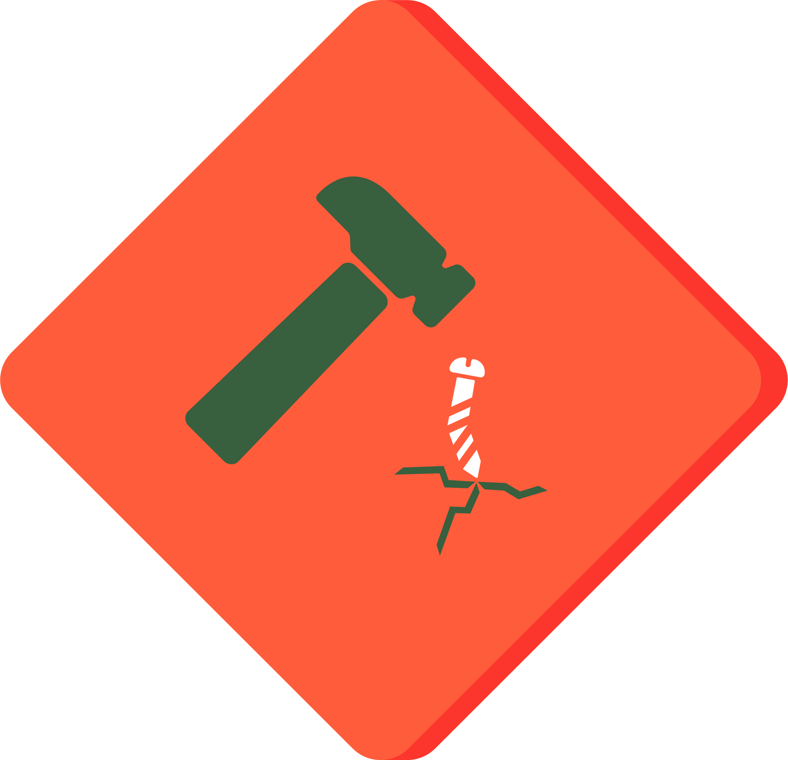

3 Data Hazards
The ethical implications that ought to be considered when doing research, usually go beyond what most ethics Institutional Review Boards propose; they should include questions about the wider societal impact of how data science and algorithms work. This is where a project like the Data Hazards Project comes in handy. Data Hazards is a project made to help us in thinking about worst-case scenarios and ways to mitigate these.
The Data Hazards Project has created a community-developed shared vocabulary of data science risks. The vocabulary presents data ethics concepts in the form of Data Hazard Labels, similarly to chemical hazard labels. This project exists to facilitate material for interdisciplinary discussions and self-reflection about all kinds of data ethics risks. So, how do these labels look like and how can they be implemeted, I hear you ask? Let’s go through some examples to answer these questions.
3.1 Example label: high environmental cost

3.1.1 Description
This hazard is appropriate where methodologies are energy-hungry, data-hungry (requiring more and more computation), or require special hardware that require rare materials.
3.1.2 Examples
- Example: Running computer models in super computers requires vast energy usage.
3.1.3 Safety Precautions
- Consider in what circumstances it is worthwhile to use this type of methodology.
- To communicate the scale of the issue to other stakeholders, you may want to convert units of energy into more relatable units.
- Find out if your cloud provider uses renewable energy.
- Consider profiling your code, and rewriting it to use less energy.
- Consider future work that would reduce the need to use increasingly more resources.
3.2 How to use the Data Hazards Project
There are four steps to using the Data Hazard labels:
- Learning: familiarising yourself with the Data Hazard labels.
- Applying: deciding which Hazard labels are relevant to your project.
- Reflecting: on what to do differently and what mitigations to make.
- Display: displaying the labels alongside your work can help you to communicate that you’ve thought about these broad ethical issues and how you’d like others to use your work.
This spells LARD üßà, which makes it pretty easy to remember! It is however an unfortunate word it shortens to, as lard comes from dead pigs, so I like to manifest it‚Äôs a plant-based LARD üå±.
As part of a Turing Way Book Dash hosted in May 2023, I worked together with a team to create a chapter on Data Hazards for the Turing Way Book. This chapter is still in draft form, but one of the fun things got to do was to work with an artist from Scriberia, to make an illustration of the Data Hazards application (Figure 3.2).

3.3 Application example into Research life-cycle
To help visualize where and when Data Hazards can be used in your workflow, below is an example assuming four main stages of workflow: design, data collection, data analysis and reporting. This is a generalised example, but something like this is what it looks like for me when I work on my PhD.
3.3.1 Design:
- Are you using data? Then doing some reflection on identity and positionality could help you think of what Data Hazards labels you might encounter as you design your project, for example “ranks of classifies people hazard” or “risk to privacy” could apply at this stage.
- In this part of the workflow, you might want to prepare to avoid certain Data Hazards if you can, and if you can’t avoid them because of where your data has come from, you may want to acknowledge this. For example, if you a sensitive data project, what Data Hazard labels will apply, and/or what can you do to design your project in a way that avoids certain harms?
3.3.2 Data Collection and Analysis:
- As you are collecting and analyzing your data, you might want to iteratively think of the potential Data Hazards that exist in the information you are collecting. To then apply the labels as you perform the next step of the process: reporting.
3.3.3 Reporting:
- When reporting your results, you can think of applying and reporting the Data Hazard labels that are relevant for your project; examples of how others have done this can be found here [link to self reflection and case studie(s)]. Labeling your project with Data Hazards should also include considerations of mitigations to these risks. This would then be helpful for people who see your outputs in the future. They can be aware of potential risks as they proceed with the project, and continue to think of solutions to any issues related to the research topic.
3.4 Application into my PhD project: Presenting my PhD as a case study at AI UK conference
In order to showcase how Data Hazards can be reflected upon during a PhD, and taking the self-reflection described above into consideration, I have been implementing thinking about the vocabulary they provide into my own work. In line with this work, I made a poster that summarised aims of my PhD, for people to be able to say which labels they thought applied to my project. This poster was part of an exhibition stand with the Data Hazards Team, at AI UK 2023.When creating this poster (Figure 3.3), I was able to both do some self-reflection and collaborative reflection, as described below.
- Self-reflection (what is my project and how will it be used?):
When making the poster, this kind of self-reflection questions are useful for oneself to think about, but also for external people who are not involved with your project to understand what potential data hazards it might have. The final poster can be seen below in (Figure 3.3). I followed the prompt questions available in the Data Hazards website for project owners who would like their projects to be discussed for data hazards:
– The overall objective of the project.
– Fairly detailed description of the variables in the dataset they are using (and what is not included).
– How and when the data was collected.
– Any statistical/algorithmic methods being used.
– Who has input on the project.
– What outputs are expected, and how these will be shared.
- Collaborative reflection (what data hazards may apply to my project?):
Then, during the poster presentation, people would come over and talk about the project, have a look at the poster, and decide by adding stickers to a list of hazards, to say which ones applied to it. You can see below how it looked (Figure 3.4).
So, as can be seen in the photo of me happily posing next to the poster Figure 3.4 (before end of the day), people were adding stickers to record which data hazard labels they thought applied to my PhD project. At the end of the day, I recorded final numbers and the results can be seen in the barchart below Figure 3.5.


3.4.1 Results from collaborative reflections:
Difficult to understand Label was chosen the most Interestingly, not all labels were chosen as applicable to my project (Figure 3.5). Only 6 of the 11 current labels were chosen as relevant, with “difficult to understand” being the most prevalent one, chosen by 6 people. High environmental impact and danger of misuse follow in closely with 5 people having chosen these ones. Of course these numbers are small and hold, more than anything, illustrative value as to how and why people may think certain labels apply to a project. In the case of my PhD project, which involves understanding of very specific molecules, as well as knowledge of programming and computer modelling software, it makes sense that the “difficult to understand” label was the one people chose the most.
find and explain mitigaions for these hardas. show examples of how im thinking to mitigate them.
MAKE A TABLE OF DATA HAZARDS -md or html or python?
| Data Hazard Description | Safety Precautions | |
|---|---|---|
| Difficult to understand. There is a danger that the technology is difficult to understand. This could be because of the technology itself is hard to interpret (e.g. neural nets), or problems with it’s implementation (i.e. code is not provided, or not documented). Depending on the circumstances of its use, this could mean that incorrect results are hard to identify, or that the technology is inaccessible to people (difficult to implement or use). |
|
|
|
High environmental impact. There is a danger that the technology is difficult to understand. This could be because of the technology itself is hard to interpret (e.g. neural nets), or problems with it’s implementation (i.e. code is not provided, or not documented). Depending on the circumstances of its use, this could mean that incorrect results are hard to identify, or that the technology is inaccessible to people (difficult to implement or use). |
|
|  | Danger of misuse. There is a danger that the technology is difficult to understand. This could be because of the technology itself is hard to interpret (e.g. neural nets), or problems with it’s implementation (i.e. code is not provided, or not documented). Depending on the circumstances of its use, this could mean that incorrect results are hard to identify, or that the technology is inaccessible to people (difficult to implement or use). |
|
blablabla where does text and table render in pdf? text to test this
3.5 Data Hazards Workshops
Talk about application of DH into different workshop setups, in COMBINE and Turing Institute.